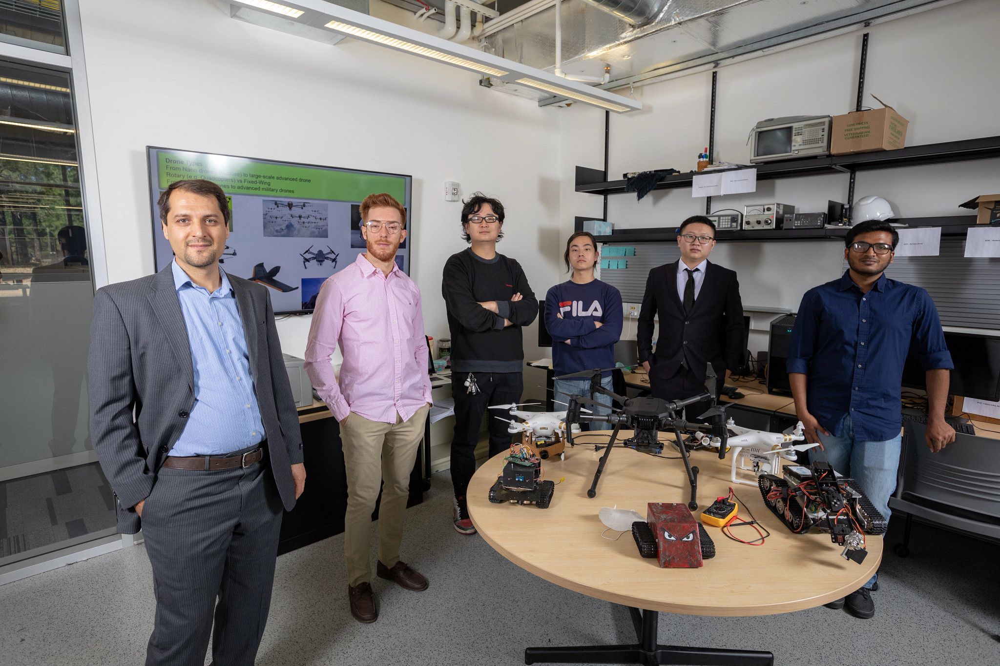

Arnau Sugranes
Research:
Predictive Communications, Routing for Aerial Networks, Graph theoretic optimization, Wireless Sensor Networks

Predictive Communications, Routing for Aerial Networks, Graph theoretic optimization, Wireless Sensor Networks

Mobility Prediction, Reinforcement Learning for UAV Networking, Video-based Action Recognition

AI-Enabled Networking, Predictive Communications, IoT

Digital Holography, Image Processing, Deep Learning
Modeling gene transcription networking with graph neural networks Navigation, Adaptive Control
Internet of Things: Security and Information Flow

Game Theory and Mechanism Design, Spectrum Sharing, Resource Allocation in Wireless & Mobile Networks, Crowd-sourcing

Computational Framework Design for Molecular Interaction Modeling, Cognitive Radio, Reinforcement Learning, Image-based Security

Machine learning, statistical modeling

Electronic Kit Design for Remote Heart Monitoring, Virtual Reality for Aerial Systems

Graph Theory, Image-based Security, Nano-scaled image feature extraction
Machine Learning for PUF Modeling
UAVs for Wildlife Monitoring
Remote Heart Monitoring